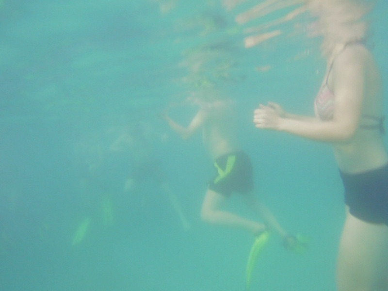

面向计算机设计大赛的水下图像增强演示系统
本报告面向计算机设计大赛展示场景，围绕水下图像增强模型的可视化演示、指标对比与样例输出进行统一包装，可直接用于作品演示、答辩展示和成果归档。
平均 UCIQE 提升
+5.1399
平均 UIQM 提升
-4.9447
平均 PSNR 提升
未计算
平均 SSIM 提升
未计算
系统亮点
当前包装基于你现有的 CycleGAN 水下增强主框架，无需改动训练主干即可完成单图/批量增强、指标统计和展示页生成，适合作为参赛作品的演示层与答辩素材层。
增强案例
每个样例同时展示原始图像、增强结果以及可选参考图像，并给出 UCIQE、UIQM、PSNR、SSIM 等指标变化。
样例 01
nm_0up
原始水下图像

增强结果

UCIQE11.2274 → 16.3673 （变化 +5.1399）
UIQM11.8156 → 6.8708 （变化 -4.9447）